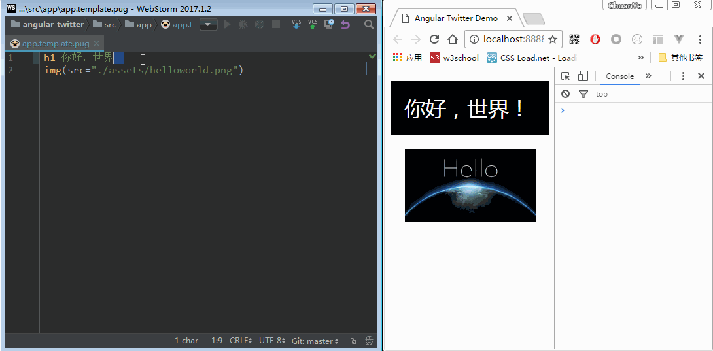

Angular从零开始 - 02. live reloading & webpack dev server2017-04-28
接上篇Angular 2从零开始 - 01.模板引擎和样式预处理器。Angular目前已经升级到4.x，之后的教程中统一使用
Angular，而不是Angular2。如果你之前已经下载过示例源码，请更新代码，并重新执行npm install，这会将Angular升级到4.x
要实现修改代码后自动重新编译并自动刷新页面，有两种方案：
webpack watch mode + live reload plugin
该方案依然会在dist目录中生成编译后的代码文件，对于没有使用或不想使用本地开发服务器的同学来说可能更方便一些
-
该方案编译生成的文件在内存中的虚拟文件系统，而不是写入硬盘中的文件，因此编译速度要更快，而且可以实现Hot Module Replacement，简称HMR，HMR比live reload更高效，它可以做到只更新某一个组件，并保留之前的状态，无需刷新页面。因此更推荐这种方式。
接下来把两种方案都实现一下
watch mode + live reload plugin
安装依赖
npm install --save-dev webpack-livereload-plugin concurrently
其中concurrently的作用是并行执行命令，具体请参考https://github.com/kimmobrunfeldt/concurrently
修改webpack.config.js

更多的配置请参考https://github.com/statianzo/webpack-livereload-plugin
修改package.json中的启动脚本
先增加一个脚本启动webpack的watch mode，增加一个参数--watch即可：
{
"scripts": {
...
"webpack:watch": "webpack --config ./webpack.config.js --bail --progress --watch"
...
}
}
然后修改start脚本：
{
"scripts": {
...
"start": "npm run init && concurrently \"npm run webpack:watch\" \"npm run server\""
...
}
}
启动
npm start
现在我们修改代码后webpack就会自动编译并自动刷新浏览器页面了：

watch mode + live reload plugin示例源码
https://github.com/indooorsman/angular-twitter/tree/live-reload
dev server
安装依赖
npm install --save-dev webpack-dev-server html-webpack-plugin
之前我们的index.html是手动复制到dist目录的，但dev-server并不知道，所以除了webpack-dev-server之外，还需要安装html-webpack-plugin，它的作用是根据指定的html模板，自动生成index.html，并自动插入webpack打包生成的js文件路径，具体请参考https://github.com/jantimon/html-webpack-plugin
修改webpack.config.js

dev-server配置文档：https://webpack.js.org/configuration/dev-server/
修改src/index.html：
删除引入app.bundle.js的代码

修改package.json中的启动脚本
增加
dev-server脚本："scripts": { ... "dev-server": "webpack-dev-server --config ./webpack.config.js --progress --open" ... }其中
--open参数会在服务启动之后自动打开一个浏览器窗口修改
start脚本："scripts": { ... "start": "npm run init && npm run dev-server" ... }
启动
npm start

dev-server示例源码
https://github.com/indooorsman/angular-twitter/tree/dev-server
下一篇教程中我们将会实现Hot Module Replacement
EOF
评论